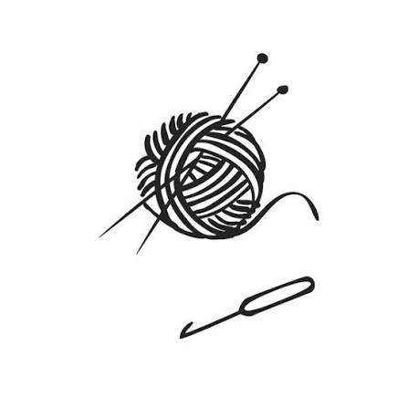

Neulonta rokkaa!
Täältä löydät helppoja villasukkien ohjeita
Mietelause ilmestyy tähän...
Vinkki: Avaa selain, paina näppäimistöltä F12 ja valitse Console nähdäksesi raakadatan.

Neulonta rokkaa!
Mietelause ilmestyy tähän...
Vinkki: Avaa selain, paina näppäimistöltä F12 ja valitse Console nähdäksesi raakadatan.